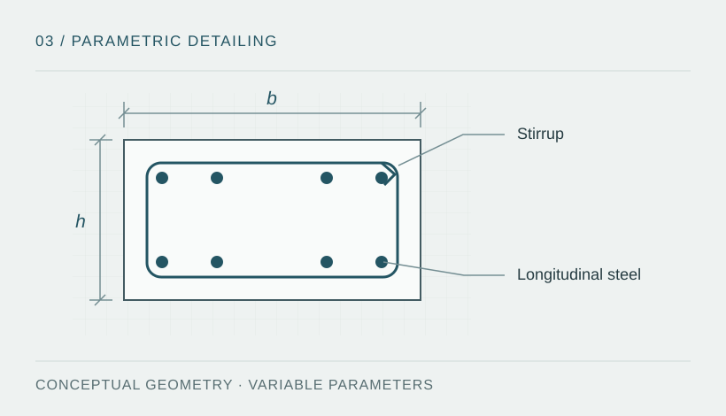

Technical problem and objective
Drafting reinforced concrete members involves repeated operations for outlines, stirrup distribution, longitudinal reinforcement, dimensions and intersections. Consistency between layers, text and geometry requires explicit criteria.
Objective: organise these operations through parameterised commands to support detail production and facilitate review. The described automation concerns drafting; it does not validate the structural design of a member.

Described families and methodology
- Beams: stirrup configuration and drafting by segment or selected area.
- Reinforcement and dimensions: routines for longitudinal reinforcement and dimensioning with consistent graphic conventions.
- Columns and structural walls: sections with parameterised geometry and reinforcement arrangement.
- Stairs and intersections: generation of geometry, boundary elements and junctions.
- Graphic organisation: rules for layers, colours, spacing and text to maintain document consistency.
The described methodology separates input parameters, geometric construction and presentation. The .lsp files are not included, so this description is not presented as an audit of implemented commands.
Described operating procedure
- Prepare parameters: dimensions, concrete cover, diameters, distribution and drafting conventions for the required detail.
- Select the member or segment: identify the geometry and relevant command family.
- Generate the drawing: construct outlines, reinforcement representations, dimensions and text on their layers.
- Review the output: check geometry, legibility, units and clashes with the other drawings.
- Review technical criteria: check confinement, development lengths, spacing and compatibility with the approved structural drawings.
Connect programming with technical documentation
The workflow's value lies in retaining the relationship between reviewed design criteria, input parameters and the detail being communicated. A future integration could use Python to prepare and validate tables and AutoLISP to construct their representation in AutoCAD.
- Record the input: member identifier, units, geometry, cover, diameters, reinforcement arrangement and source revision.
- Validate parameters: detect empty fields, incompatible units and values outside the supported scope before generating geometry. Data consistency does not establish reinforcement adequacy.
- Produce and trace the detail: associate the output with the member, parameter table and routine revision while retaining layers, dimensions and drawing conventions.
- Review and issue: compare the drawing with the calculation report and coordinated drawings, document changes and retain technical review before incorporating it into a deliverable.
Integration status: a proposed way to organize the work. It is not presented as an implemented Python–AutoCAD connection or a process used on the professional projects. Source .lsp files and authentic screenshots for the previously described routines remain outstanding.
The concrete design and detailing references inform review under the adopted design basis. The independent data-validation demonstration, created for this portfolio in October 2026, explores CSV checks; it does not run AutoCAD or these routines.
Described outcome and outstanding evidence
The documentation describes a more systematic and configurable drafting workflow. No source files, execution screenshots or measurements are included to verify operation or quantify productivity. No percentage time savings are claimed.
| Available | Material still to be added |
|---|---|
| Description of routine families and operations. | Shareable code examples and command documentation. |
| Conceptual detailing schematic. | Authentic AutoCAD screenshots, input and output examples, and compatible software version. |
| Drawing review criteria. | Executed cases, error records and comparable measurements if processing time is to be assessed. |
Skills addressed
Breaking down repetitive tasks, geometric parameterisation, organisation of technical drawings and procedure documentation. AutoCAD and AutoLISP are the technologies described for these families; executable evidence remains to be published.